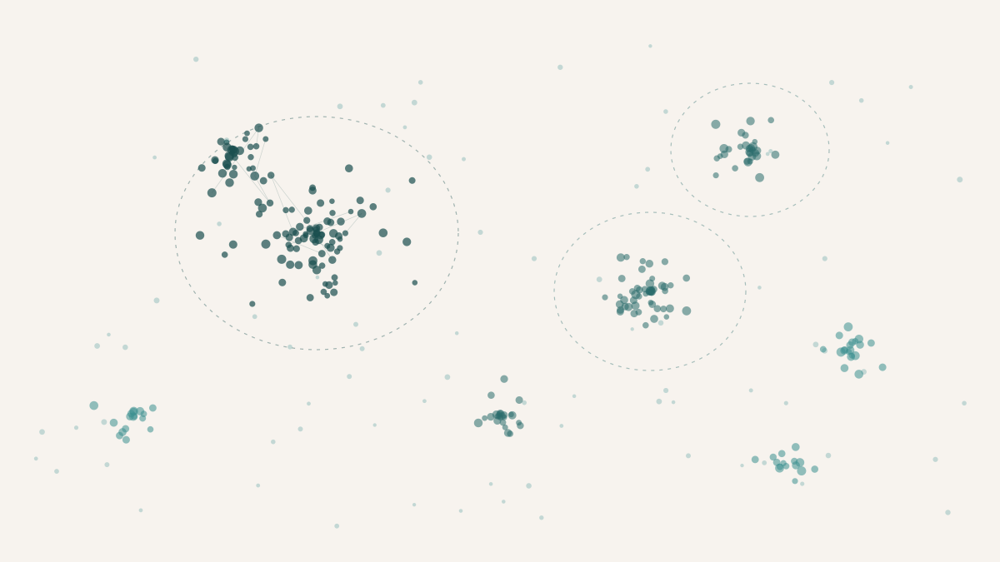

I exported my bookmarks one night because I was curious what they would look like from the outside. Not as a list — I already had the list, all 3,996 of them accumulated across four years and multiple browsers via Raindrop.io — but as a structure. If you took every URL a person had saved and asked a machine to sort them without any prior categories, what shape would emerge?
The answer turned out to be more legible than I expected, and more embarrassing in a few specific places.
The first problem was deduplication. Bookmarks, it turns out, are not saved once. The same arxiv PDF gets bookmarked in slightly different URL forms across browsers, across machines, across moods. Fuzzy string matching with rapidfuzz at a similarity threshold of 92 — with a length guard and a strict-subset rejection rule to avoid collapsing genuinely different pages — brought the count from 3,996 down to 2,393. The average bookmark had been saved 1.67 times. That number alone says something about how absent-mindedly I interact with the internet.
The pipeline from there was straightforward. The method is worth making concrete.
The full pipeline: bookmark titles are embedded, reduced to 10 dimensions via UMAP with cosine distance, clustered by HDBSCAN (minimum cluster size 15), and auto-named by TF-IDF keyword extraction. The whole thing runs locally in about thirty seconds.
Sentence-transformers — specifically all-MiniLM-L6-v2 — generated an embedding for each bookmark's title. UMAP reduced the dimensionality from 384 to 10, using cosine distance. HDBSCAN, a density-based clustering algorithm, grouped the embeddings into clusters — 42 of them — with a minimum cluster size of 15. TF-IDF keyword extraction named each cluster automatically. The whole pipeline ran locally, no API calls, no cloud, just a laptop and about thirty seconds of compute.
The output was 42 named topic clusters across 9 parent categories, plus a 525-item noise bin of things HDBSCAN could not confidently assign to any cluster.
The funnel. Forty percent of bookmarks were duplicates. Of the survivors, roughly three-quarters clustered cleanly; the rest were too semantically scattered for HDBSCAN to group with confidence.
What was interesting was less the number of clusters than their character. Physics dominated, accounting for roughly a third of all bookmarks across three sub-categories: research topics (X-ray absorption, BEC, the Hubbard model, cold atoms), graduate school logistics (PhD programme listings, Lancaster admissions pages, GRE prep), and reference material (lecture note PDFs, textbook chapters). That was not surprising. What was mildly surprising was the size of a few non-physics clusters: 67 bookmarks about film and video essays, more than all lifestyle, fashion, and stationery bookmarks combined. A 62-item cricket cluster correctly fused across Cricbuzz, Reddit, and SonyLiv. A 52-item OnePlus Nord and GCam cluster that, for reasons I still do not fully understand, contained a 10-item sub-spike of VOSviewer bibliometrics pages.
The noise bin was revealing in its own way. YouTube and Reddit dominated it — 44 and 41 items respectively — which makes sense because their page titles are semantically random enough that no embedding model can do much with them. But buried inside the noise were roughly 100 university and admissions pages that had landed as singletons only because each institution uses slightly different phrasing for the same information. Those could be rescued with a targeted second pass.
HDBSCAN's cluster quality turned out to be surprisingly high. After manual review of all 42 clusters: 25 were clean enough to use as-is, 7 needed better names, 5 needed splits, and 5 were honest junk drawers that the algorithm had correctly identified as these go together, but what they are is mess. Zero were structurally broken. For an unsupervised method running on bookmark titles alone — not full-text content, not click history, just titles — that is a better hit rate than I would have predicted.
The whole thing took about four hours on a weeknight. The output was a set of Obsidian markdown files with YAML frontmatter, organised into topic folders, ready to absorb future imports from Readwise and Notion. Whether I will actually use it as a knowledge base is an open question. But as a one-evening exercise in self-quantification, it was more informative than I expected. The algorithm did not discover anything I did not already know about myself. It just made the proportions visible. Physics is a third of my attention. Media and culture is a fifth. Everything else is a long tail of things I cared about for two weeks and then forgot.
That, apparently, is the shape of one person's curiosity when nobody is watching.